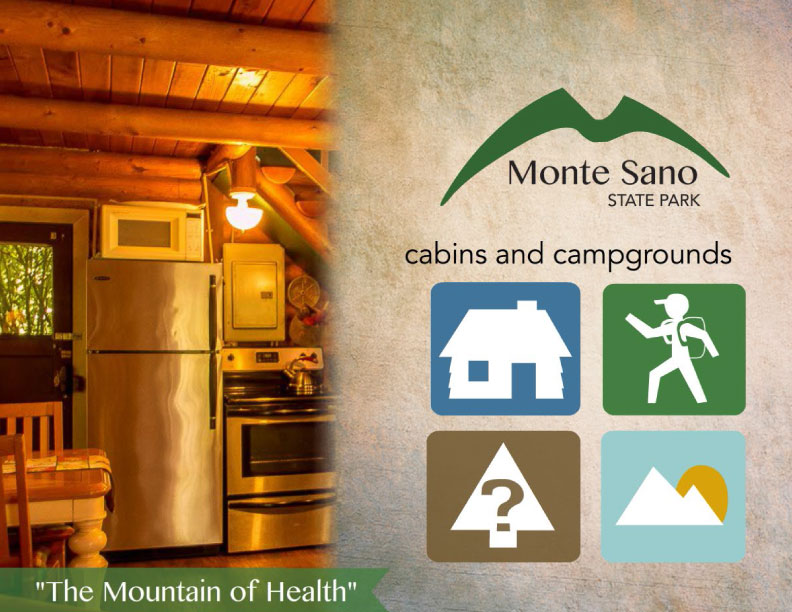
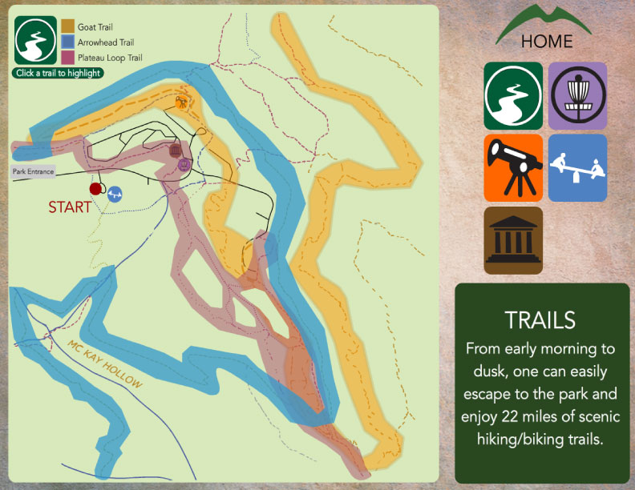
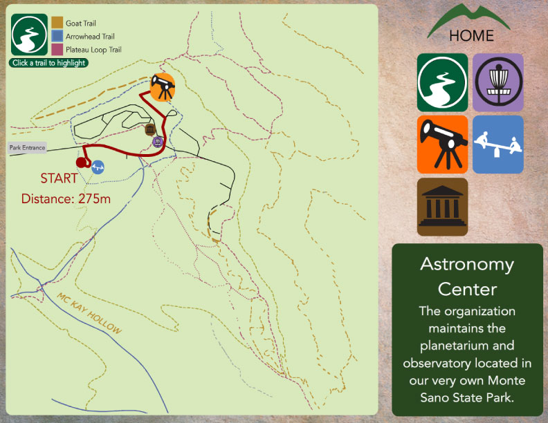
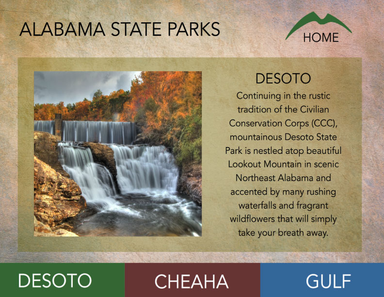

Monte Sano
Monte Sano State Park hosts a wide variety activites and need a kiosk to help new visiters find thier way around. This kiosk is designed to show visiters activity locations, distance, and descriptions. Other state parks included to market the parks collectively.
Client
- School Project
Role
- UI Design
- Motion Design
Tools
- Adobe Flash
- Adobe Illustrator
Logo
The rolling hills of Monte Sano mountain gave me the inspiration for this logo.
UI DESIGN
The idea for this interface was to leverage beautiful photos and existing maps of the park to create the kiosk. There is a lot of information so it had to be divided up into four areas: lodging, activites & trails, park rules, and other Alabama State Parks.



